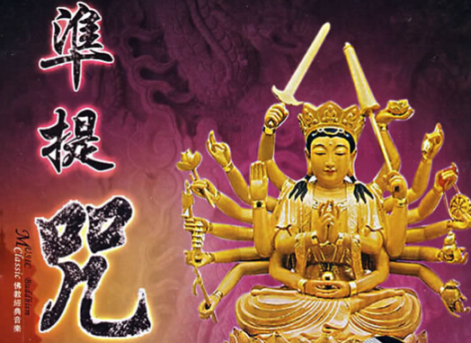

一、密咒不轻示人之由 在某些纯密的经典里有谈到，密咒密法不能随意透露给非
1 “无智”、“不信”、“恶人”、“不守口”人等。
2 未受“具誓”者。
3 妄相付与“下劣贱人恶性”众生、“
4 及于
5 或有“大愚迷者”、“深贪爱”，亦不得传付。
6 苟无“顿悟”之机，则不入其手。
7 如来密传大
8 非“钝根、薄福”之人所能遭也。
9 “断三宝族者、不亲近善友者、无福无德者、亲近恶人者、亲近罪友者、远离
10 惟须“好心直行”之人，乃可相与。除此以外，勿“妄传”之。
1 恐有诽谤之罪。
2 生疑不信，反益其罪。
3 恐未来众生轻慢法故，不能咨访善知识，未蒙三密加持。而自师心执文，辄自修学，久用功力无所能成，反谤此经谓非佛说。
二、拣别1、《速疾立验魔醯首罗天说阿尾奢法》云：（《大正藏》第二十一册页330中）
此法一切“迦楼罗法”中最
2、《大毗卢遮那成
如世人慈育稚子，虽复情无所吝，而不授与干将莫耶，以不知运用方便故，必伤其体，今此法门亦复如是。即心成佛旨趣难知，恐未来众生轻慢法故，不能咨访善知识，未蒙三密加持。而自师心执文，辄自修学，久用功力无所能成，反谤此经谓非佛说。又此经文，有浅略深秘二释，就深秘释中，复有浅深。辄尔披玩者，以不解密号故。谓是因缘事相，心生慢易自言：我行真道何用？术事耶？以如是等因缘，感匮法业，于无量劫，堕恶趣中。
3、唐·一行记《大毗卢遮那成佛经疏·卷十六·秘密漫荼罗品第十一之余》云：（《大正藏》第三十九册页745中）
漫荼罗要者，应善知之，应修瑜伽之行。晓了众生种种根性利、钝，及有遮、无遮，及本尊之
4、含光记《毗那夜迦誐那钵底瑜伽悉地品秘要》云：（《大正藏》第二十一册页323上）
如上微妙秘义，末代智者，应以秘之。应安梵夹中，于“非器人”，勿妄传授故。何谓非器？所谓“无智”与“不信”，及“恶人”、“不守口”人等，是“非器人”也。若于是等人前，恣宣传者，恐有诽谤之罪。是故不撰“器”人者，即有障难，所以今更加制言也。智者修之，速得悉地。
5、唐·金刚智译《北斗七星念诵仪轨》云：（《大正藏》第二十一册页424上）
若有人每日诵此神咒，决定罪业，皆悉除灭，成就一切愿求……故以是法甚为秘密，“不信者”及“无智人”中，勿妄宣传。“无智人”不分明心故，不得法意生疑谤。
6、宋·慈贤译《妙吉祥平等瑜伽秘密观身成佛仪轨》云：（《大正藏》第二十册页933下）
此法甚秘密，不得妄“宣传”，除逢“智慧人”，乃可为宣说。
7、唐·菩提流志译《佛
若有善男子善女人，欲持此“契”者，心念十方诸佛七遍，然后当结此“契”。其“契”每于大月十五日，结此“契”，持得万遍，十方世界所有
8、《释迦文尼佛金刚一乘
彼阿阇梨，若见众生堪为法器，远离诸垢，有大信解，勤勇深信，常念利他。若弟子具如是相貌者，阿阇梨应自往劝发之……如来秘密
9、唐代失译《佛说大威德金轮佛顶炽盛光如来消除一切灾难陀罗尼经》云：（《大正藏》第十九册页338中）
佛言：……但书写此经志心受持读诵，常须护净。此陀罗尼一切如来同共宣说，能成就八万种大吉祥事……我说此真言不可思议，功德无比。秘密受持，勿妄“宣传”。
10、唐·不空译《佛说炽盛光大威德消灾吉祥陀罗尼经》云：（《大正藏》第十九册页338上）
此陀罗尼，一切如来同共宣说……我今说此陀罗尼不可思议功德无比。秘密受持，勿妄“宣传”。
11、圣行
是故
12、唐·金刚智译《金刚峰楼阁一切瑜伽瑜只经·卷下》云：（《大正藏》第十九册页266上）
我今故演说，金刚手善听。为诸真言师，广说成利益。勿妄“传授”与，未受“具誓”者。兼“无智慧人”，金刚内护摩。我今当说竟。